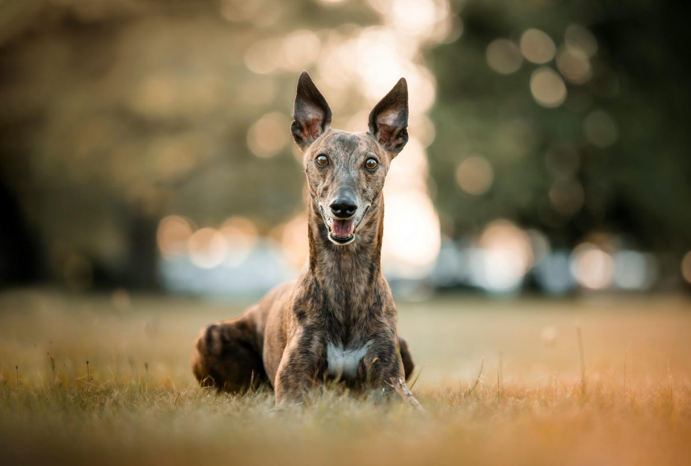

Whippet
35 mph sprinter. World-class napper. No in-between.

The Whippet is frequently described as the most practical sighthound, and the description is earned. You get the grace, speed, and elegance of the greyhound family in a medium-sized package that's genuinely gentle indoors, good with families, and easygoing about daily life in a way that the breed's athletic capacity wouldn't suggest.
They're affectionate without being demanding about it — pleasant, quiet, and unobtrusive in the house for most of the day, then capable of 35 miles per hour in a straight line when the moment calls for it. The switch between the two modes is part of the Whippet's particular appeal.
Whippets typically live 12–15 years and are among the healthier breeds relative to their size. Like all sighthounds, they have very low body fat and metabolize anesthesia differently — any vet performing a procedure should know this.
Mitral valve disease appears at modest rates in older dogs and is worth monitoring. They're sensitive to cold and often genuinely need a coat in winter, which is not affectation on the dog's part. Hip and joint problems are less common here than in many comparable breeds.
Whippets are lean and should stay that way — their build isn't padded, and extra weight changes their movement, their joint load, and their health over time. A visually bony dog is often a correctly conditioned Whippet, not an underfed one.
They're efficient in the sighthound way and don't need enormous amounts of food for their size. Quality over quantity, and resist the well-meaning impulse to add weight to a dog that looks thin by non-sighthound standards.
Whippets are one of the most genuinely family-friendly sighthounds. They're gentle with children, easygoing with other dogs, and calm enough indoors to be compatible with a wide range of households — including apartments if the exercise requirement is genuinely met.
The prey drive is real and recall off-leash is unreliable once something triggers it, which is consistent across the sighthound family. Small animals are at risk. But compared to many breeds in their speed class, Whippets are remarkably adaptable to family life.
The Whippet is consistently underrated, and that's genuinely the honest take: this is one of the best all-around medium dogs available, and it's less popular than it deserves to be because it doesn't come with a dramatic personality or breed story.
Low-shed, low-drama, low-noise indoors, moderate exercise needs, good with families, good with other dogs — and then occasionally a 35 mph reminder that there's an athlete in there. If you've been considering a Greyhound but aren't sure about the size or commitment, the Whippet is frequently the answer to that question.
How much exercise does a Whippet need?
The Whippet has moderate physical activity needs and moderate mental stimulation needs.
What size is a Whippet?
The Whippet is a medium-sized breed.
How much grooming does a Whippet need?
The Whippet has low grooming needs.
Is a Whippet easy to train?
The Whippet is moderately trainable.
Is the Whippet a good choice for first-time owners?
Yes — the Whippet is generally considered a good fit for first-time dog owners.
Is a Whippet apartment-friendly?
The Whippet can live in an apartment, as long as it gets enough daily exercise.
How long does a Whippet live?
The Whippet typically lives 12–15 years.
General references for further reading. For your own dog, always check with your veterinarian.